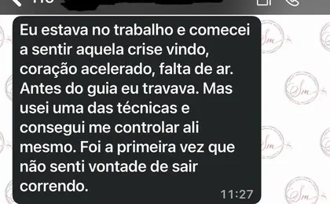
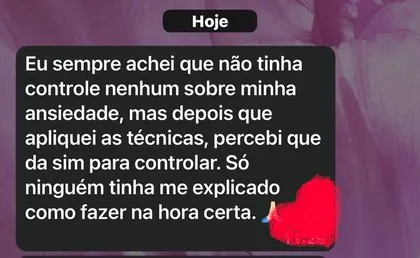
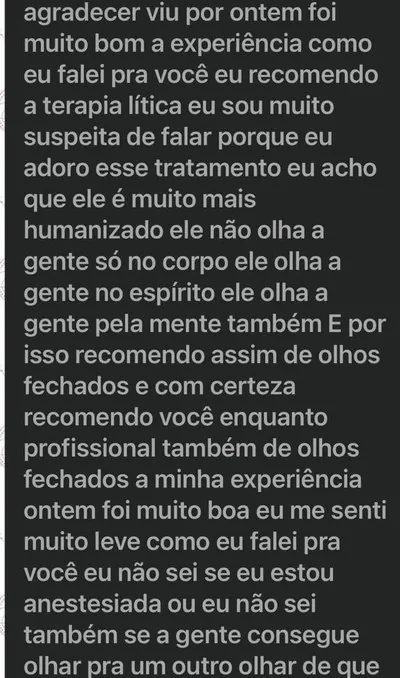
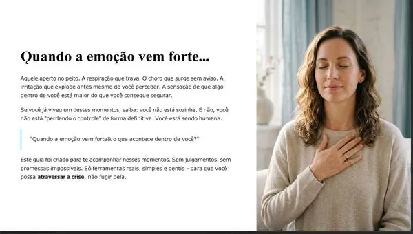
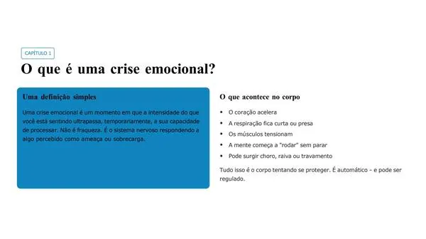
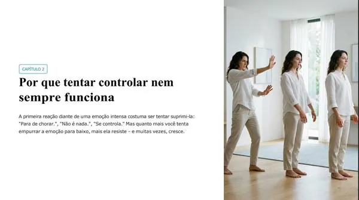
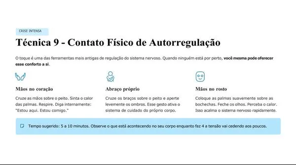
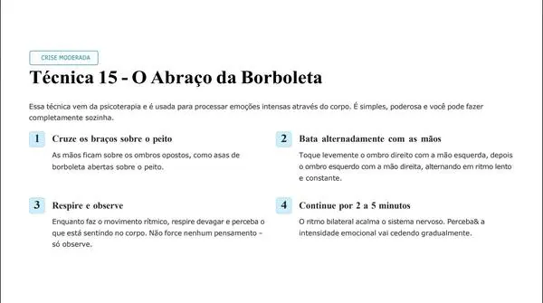

Se você já viveu algum desses momentos, saiba: não é fraqueza. É o seu sistema nervoso respondendo sem ter o método certo.
Você tenta se controlar... e piora ainda mais. A crise cresce quanto mais você empurra pra baixo.
Você começa a evitar situações com medo de ter uma crise na frente dos outros.
Depois da crise, vem o arrependimento e a autocobrança. "Por que eu não consegui me controlar?"
No fundo você pensa: "tem algo errado comigo." Como se você fosse a única que passa por isso.
O coração acelera, a respiração trava, a mente vai a mil e você não sabe o que fazer naquele momento.
E o pior: o ciclo se repete. Crise → arrependimento → medo → nova crise. Sempre igual.
"Quantas crises você ainda vai perder por não saber o que fazer no momento certo?"
QUERO APRENDER AGORA →Você não está exagerando. Não é instável. Não é "dramática demais".
Quando a crise chega, seu cérebro entra em modo de sobrevivência. A parte racional desliga. E nesse estado nenhuma técnica superficial vai funcionar.
Não porque você falhou. Mas porque você nunca teve acesso ao que realmente funciona nesse momento específico. É sobre saber em qual ordem agir para que seu corpo saia do modo pânico.
Durante uma crise, seu cérebro ativa o sistema nervoso simpático o modo luta ou fuga. O córtex pré-frontal (responsável por pensar com clareza) é temporariamente desligado.
Por isso respirar fundo, contar até dez ou "tentar se acalmar" não funciona. Essas técnicas precisam de um cérebro racional ativo exatamente o que você não tem durante a crise.
O sistema funciona porque atua no corpo primeiro, antes da mente. Cada técnica foi estruturada para sinalizar ao sistema nervoso que o perigo passou sem precisar "pensar certo" para isso. Você vai sentir seu corpo desacelerar antes mesmo de terminar as técnicas.
Respiração guiada, ancoragem e técnicas somáticas reconhecidas por atuar diretamente no sistema nervoso autônomo.
Técnicas organizadas por nível de crise. Você sabe exatamente o que fazer mesmo quando a mente trava.
Práticas para o dia a dia que ajudam você a perceber os sinais antes de a crise chegar.
Professora da rede pública desde 1996 e terapeuta holística por missão. Em 2017 decidi tornar oficial o que já me pertencia e desde então nunca mais me senti sem propósito.
Reiki, Tarot, aromaterapia, florais, cromoterapia... mais de 9 anos ajudando pessoas a sair do ciclo de crises e viver com mais leveza. Esse guia reúne as técnicas que aplico nos meus atendimentos práticas reais que ajudam o corpo a voltar ao equilíbrio.
São pessoas reais usando o método exatamente no momento da crise.
"Leia o título de cada depoimento você vai se ver em algum deles."


Técnicas práticas, organizadas por nível de crise, para você aplicar em minutos mesmo quando a mente trava.
Para diferentes tipos e intensidades de crise emocional.
Leve, moderada ou intensa você sabe exatamente o que fazer.
Sem depender de calma prévia, meditação ou ambiente ideal.
Para você se sentir mais preparada antes da próxima crise.
Veja algumas páginas do método técnicas reais, organizadas por nível de crise.





Parar uma crise no trabalho sem precisar sair da sala
Usar uma técnica em menos de 3 minutos e sentir seu corpo desacelerar
Parar de evitar situações com medo de ter uma crise
Controlar suas reações em discussões sem explodir ou engolir tudo
Organizar os pensamentos acelerados e voltar à clareza mental
Parar o ciclo de crise → arrependimento → autocobrança → nova crise
Perceber que dá sim pra controlar só ninguém tinha te explicado como
Viver com mais leveza, sem o medo constante da próxima crise
"Quantas crises você já perdeu por não saber o que fazer no momento certo?"
Quanto tempo você ainda vai viver evitando situações, se arrependendo depois, sentindo que tem algo errado com você?
Por menos de R$1 por dia, você para de perder dias inteiros por causa de uma crise.
✓ Ideal para começar
✓ Use já na próxima crise
🔥 Para quem quer ir além do momento da crise
✦ 9 bônus para cuidar das emoções no dia a dia
Por menos que o valor de um lanche, você vai além de aliviar a crise
e passa a se cuidar também no dia a dia.
"Porque parar a crise não é suficiente. Você precisa entender o que acontece dentro de você."
Entenda por que você se cobra tanto e aprenda o método para interromper esse ciclo silencioso que alimenta sua ansiedade todos os dias.
Uma sequência simples para regular seu sistema nervoso antes que o dia te sobrecarregue.
Técnicas práticas para manter o controle emocional em conflitos sem engolir tudo e nem perder a cabeça.
Aprenda a identificar os sinais que seu corpo e mente enviam antes da crise chegar e aja antes que ela tome conta.
Um guia prático para ressignificar a forma como você se vê após momentos de crise e arrependimento emocional.
Entenda por que suas emoções chegam tão fortes e descubra que isso não é fraqueza é uma característica que pode ser direcionada.
Um exercício guiado para você mapear seus padrões emocionais e entender como reage em situações de pressão.
Um método rápido para nomear o que você está sentindo antes que a emoção te domine. Clareza que muda tudo.
Aprenda a separar a emoção do fato e pare de reagir ao que você interpretou em vez do que realmente aconteceu.
Aplique o método. Se você não sentir diferença nas primeiras aplicações, basta me enviar uma mensagem e devolverei 100% do seu dinheiro em até 7 dias. Sem perguntas. Sem burocracia. Sem enrolação. O risco é completamente meu não seu.
Sim. O sistema foi criado justamente para momentos em que a mente trava. As técnicas são simples, diretas e organizadas por nível de crise para você saber exatamente o que fazer mesmo sem conseguir pensar com clareza.
Pode ajudar, sim. Muitas vezes o que você tentou antes precisava de um cérebro calmo para funcionar. Essas técnicas começam pelo corpo, antes da mente, e foram pensadas para o momento em que a crise já começou.
Sim. Após a confirmação do pagamento, você recebe o acesso imediatamente por e-mail.
Não. Este material é uma ferramenta prática de apoio emocional, mas não substitui acompanhamento psicológico ou médico. Se suas crises forem frequentes, intensas ou envolverem risco à sua segurança, procure ajuda profissional.
Depende do seu momento. O básico de R$10 traz o guia completo com +20 técnicas para usar na hora da crise. O sistema completo de R$27 inclui também os 9 bônus, para cuidar das emoções no dia a dia: autocobrança, rotina de equilíbrio, discussões e mais.
Sim. Você tem 7 dias de garantia total. Se não sentir diferença nas primeiras aplicações, devolvemos 100% do valor sem perguntas.
Se você chegou até aqui, já sabe que precisa de algo diferente.
💙 Acesso imediato e permanente Você recebe tudo por e-mail logo após a confirmação do pagamento.
Continuar tentando se controlar do mesmo jeito que nunca funcionou...
ou aprender o que realmente funciona no momento da crise.
Prefere começar pelo básico? O guia com as +20 técnicas sai por R$10.